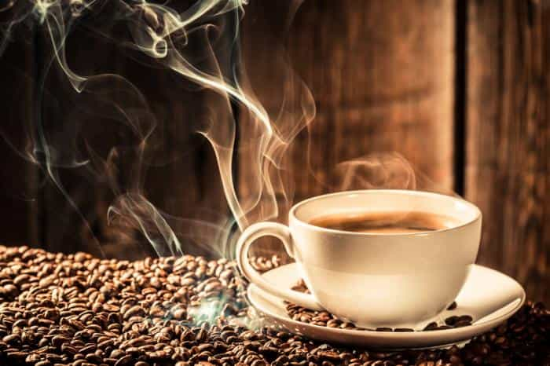
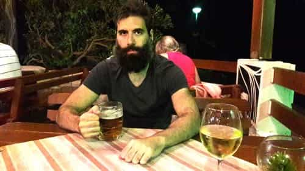

Daryush "Roosh" Valizadeh created ROK in October 2012. You can visit his blog at RooshV.com or follow him on Twitter and Facebook.


When people attempt to fix their fatigue or mood problems, they may become dependent on substances or drugs that actually have the opposite intended effect with the added detriment of long-term issues. I recently embarked on a 30-day period of purity that has allowed me to troubleshoot health problems, stabilize my energy and mood, become more in tune with my natural state, and reduce psychological dependencies.
In your physical prime, you are not likely to give a second thought to drinking a couple espressos a day or having fun on the weekend by pounding shots with your friends. Your sexual vitality may also remain high in spite of excessively consuming drugs or estrogenic compounds. This changes once you reach your 30’s. Your old habits start to drag down your energy and mood while masking lifestyle or health problems that need to be resolved.
I wake up and I’m tired so I drink coffee throughout the day. Then I’m too jittery so I drink a couple beers to take me back down. I’m too busy to go out during the daytime so I take vitamin D pills instead of getting sun. I’m bored at home so I watch some porn and jerk off. Suspecting that these habits were harming my natural state, I quit them cold turkey. Here’s how it all went…

The first thing I used to do when waking up was brew a strong black cup of coffee. I would sometimes add a second cup throughout the day or drink a pot of black tea.
As I’ve written before, the withdrawal symptoms of caffeine are quite serious, revealing how potent it is as a drug. On the third day of the purity challenge, I was exceptionally tired, and had to take daily naps for several days. I also experienced bad headaches for more than a week. It took approximately ten days for all withdrawal symptoms to subside.
To substitute my coffee habit, I would drink one cup of green or white tea in the morning, which has exceedingly low caffeine, and herbal tea after that if I craved additional hot beverages. The result is that my energy is more flat throughout the day, without the highs and lows I had before. I also know that if I don’t go to bed at a good hour, there will be no way to relieve my fatigue the next day unless I take a nap.

Over the winter, I developed a habit of drinking at least one pint of beer every evening. This was quite easy to stop from an addiction standpoint, but it was more challenging on a social and dating level.
Whenever I go out at night with my friends, they’re all drinking. I can directly see how the alcohol helps them enter a more relaxed and fun state where they enjoy the loud venue while I remain stiff as a board. I was also reminded how deeply alcohol is integrated into modern dating, since girls insist on drinking copious amounts of booze at night and on dates. It wasn’t a big deal that I wasn’t drinking at the bar while hunting, since my soda water with lemon could easily be confused for a drink, but not drinking on dates ensured the girls wouldn’t drink either, greatly reducing the speed to sexual fulfillment.
I’ve had some experience with “sober game” in Ukraine, where I met girls who didn’t drink, but having to do it on every single date posed a big challenge. The result of sober dates is that you actually have to like each other beyond physical attraction, because your logical mind remains quite strong, ready to dismiss the girl for practical reasons that you wouldn’t have come up while inebriated.
Going completely sober ultimately means that it will take longer to sleep with any girl. The benefit is that you’re unable to bang subpar girls just for the notch and are able to spot genuine connections that don’t require a drug to blossom. In terms of health, the benefits are no hangovers and improved sleep, especially on nights I would have consumed more than two drinks. I can stay out late on the weekend and wake up the next day without feeling any negative effects.
My supplement stack was fish oil, magnesium (to counter heart palpitations caused by caffeine), and vitamins B, C, and D. I stopped all of those cold turkey, added more vegetables to my diet, and spent more time in the sun on warm days.
I do think vitamins work in theory, but I don’t believe they get absorbed in the same way as nutrients from food. We also have to be careful about thinking a substance has a benefit for us when it was tested on populations that differ in genetic profile. For example, the benefits of fish oil are heralded as reducing heart disease, but it’s mostly tested on Asian populations where fish is a staple of their diet. The problem is that I’m not Asian. I also didn’t know exactly how these vitamins are made, and whether companies cut corners during the manufacturing process.
I haven’t noticed any obvious changes after stopping all supplementation. This is not surprising since most of their benefits are supposed to be long-term. If you happen to smoke cigarettes or take pharmaceutical or illegal drugs, you can halt those too for the purity challenge.
Lastly, I quit porn. I’m already familiar with the damaging effects of porn, particularly how it programs you to greatly desire sluts while harming long-term penis function, but what pushed me over the edge was that I was experiencing less spontaneous boners. For years I have been training myself to only get boners when I watched porn or was with a naked woman. Porn also caused me to masturbate not when I was horny but when I was bored.
Masturbating without porn meant that I had to be genuinely horny, enough to imagine sex with my mind, which I haven’t had to do in over 15 years. Since using your mind to masturbate isn’t as fun, the effect is you fap less and have a higher baseline of horniness that helps with your game.
Another big impact in not using porn is that I’m far more sensitive to seeing female flesh or images of girls in lingerie. It’s possible for me to get a half boner right now if I catch sight of a girl out my window in a bikini top. I’m 38 but feel that my penor vitality has gained a solid decade in youth. If you think you’re masturbating too much, you can also add no fap to the challenge.
Even after the 30 days of the challenge passed, I decided to continue because of the strong benefits. Not drinking caffeine has stabilized my energy, forcing me to fix fatigue with rest and sleep instead of the short-term benefit of coffee. Not drinking alcohol has improved my ability to seek a different kind of connection with women while I enjoy better mood and sleep. Not taking supplements has pushed me out the door to get more sun while improving my diet. And not watching porn has given me more frequent boners and higher overall horniness.
Another change is that I’ve become extremely perceptive to tiny changes in my body. Coffee and alcohol tend to mask your natural state, but now I can link a change in energy or mood to either my previous nights’ sleep, a meal I just ate, bad news I received, or a tense conversation I experienced. It has become easy to connect why I’m feeling a certain state with my most recent actions. This has led me to conclude that getting proper sleep is the absolute best way to have a good day. Following that is is avoiding foods that have high glycemic index like pizza, which may cause you to feel sleepy, and steering clear of people who start arguments or drama.
The first two weeks of the purity challenge may be a drag for you as your body copes with withdrawal symptoms, so wait until weeks three and four to observe its true benefits. I’ll certainly backslide when it comes to alcohol and coffee, but at least I’ll remember that their benefits are cancelled out by costs which have a measurable impact on my body, and that existing mainly on sleep, food, light teas, and water puts me close to my most primal animalistic state.
This article was originally published on Roosh V.
Read Next: 5 Surprising Uses For Baking Soda